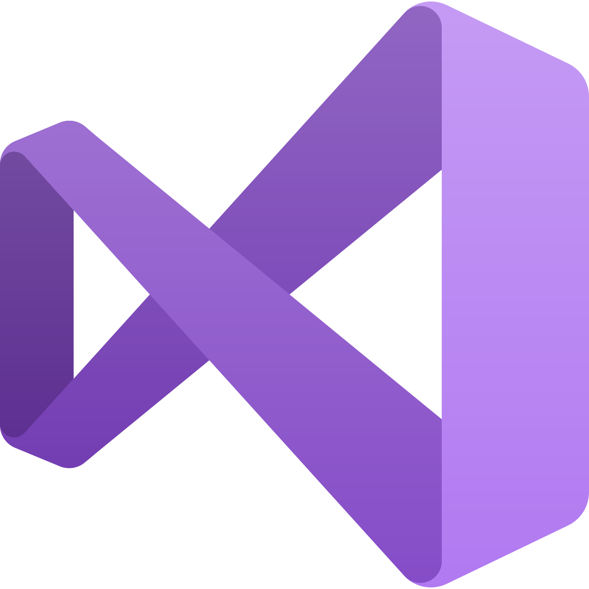

Compétence
Étant jeune diplômé, j'ai pu acquérir différentes compétences au cours de mes études, autant d'un point de vue des thématiques abordées que des technologies maîtrisées. Mes compétences s'étendent aujourd'hui de l'algorithmie à la mise en place d'un environnement virtuel via des moteurs de rendu en temps réel comme Unity ou Unreal Engine. Ayant réalisé différents projets durant mes études touchant aux technologies de rendus 3D réaliste, je me sens aujourd'hui capable de relever différents défi. Je m'intéresse également de près aux nouvelles technologies et en particulier à la réalité virtuelle, la réalité augmentée et la réalité mixte.
Développement Logiciel


...
Développement Web


...
Outils Informatique



...